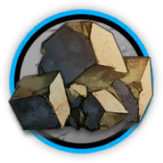
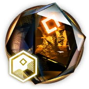

按钮
标签
默认描边强调浅强调黄信息成功警告危险BREAKING反转NEW
卡片（含整卡链接）
赤霄·拔刀
技能 2 · 攻击回复 · 手动触发
赤霄·绝影
selected技能 3 · 攻击回复 · 手动触发
Gamedata数据版本
本页数据取自游戏版本 2.7.61。标题栏独立成一栏、下面一道分隔线（segmented）。
01 · Foundations
基础
理念、色彩令牌（出处可追溯）、字体排印、装饰语言。
02 · Chrome
皮肤骨架 · 页眉与主题接口
黑色「终端」顶栏的构件、搜索面板、活动主题只改哪几个变量。
03 · MediaWiki
MediaWiki 内容样式
.mw-parser-output 里的一切：链接、列表、wikitable、图库、目录。
04 · Components
通用组件
按钮、标签、卡片面板、标签页、消息弹层、进度统计、表单。
05 · Arknights
方舟组件
稀有度职业、干员卡、道具材料、技能天赋、模组语音档案。
06 · Pattern
干员页整页样例（陈）
PRTS 最复杂的页面用这套系统搭一遍，数据取自 gamedata 2.7.61。
标签页
下划线标签页（默认）：选中项青色下划线 + 左上角标。
消息
下拉菜单（展开态）
面包屑 / 分页
第 1 / 24 页
时间线
- 2019.04.30公开测试开启明日方舟正式上线。
- 2026.08.012.7.61 版本当前数据版本。
- TBA下一版本
步骤条
- 精英零（已完成）
- 精英一（已完成）
- 精英二
- 满级
键值表
- 分支
 剑豪 Swordmaster
剑豪 Swordmaster- 描述
- 普通攻击连续造成两次伤害
- 分支信息
- 可以且优先攻击自身阻挡的单位（即使目标处于攻击范围外或为飞行单位）。
- 代号
- 陈
- 性别
- 女
- 战斗经验
- 四年
- 出身地
- 龙门
- 生日
- 7月7日
- 种族
- 龙
- 身高
- 168cm
- 矿石病感染情况
- 未公开
干员卡


干员行
道具（合成图 + 裸图标）
 6
6 12
12
5 3
3 2
2
1 30K
30K 4
4 4
4技能

赤霄·绝影
攻击回复手动触发消耗36初始10持续 —
向周围寻找最近的敌方目标，对其发动10次连续斩击，每次造成相当于攻击力260%的物理伤害，并在最后一击时使目标晕眩3秒

赤霄·拔刀
攻击回复手动触发消耗25初始14
对前方范围内最多6名敌人造成相当于攻击力410%的物理和相当于攻击力410%的法术伤害

鞘击
攻击回复自动触发消耗5初始0
下次攻击使用刀鞘砸向敌人，造成相当于攻击力260%的物理伤害，令命中目标晕眩1.5秒
富文本
攻击力+50%
防御力-30%
造成法术伤害
普通攻击连续造成两次伤害
攻击力+6%（+1%）
令目标晕眩1.5秒
注意：本关卡无法撤退
敌方单位
镀层
通关1-7
数据表
| 阶段 | 等级上限 | 生命 | 攻击 | 防御 |
|---|---|---|---|---|
| 精英零 | 50 | 1684 | 361 | 221 |
| 精英一 | 80 | 2188 | 469 | 288 |
| 精英二 | 90 | 2880 | 610 | 352 |